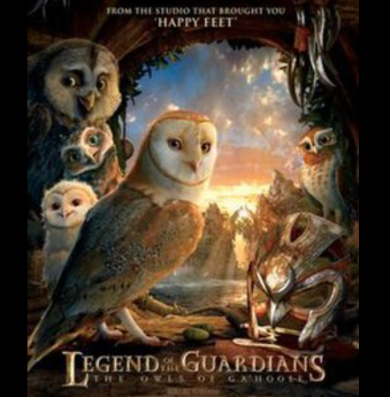
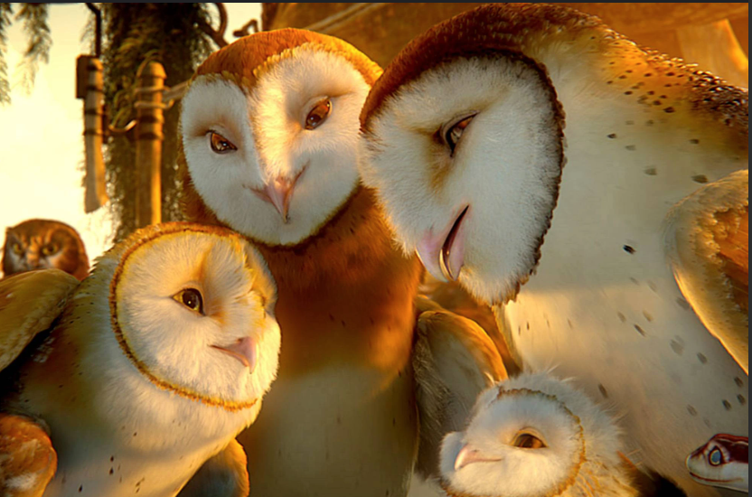

This action packed movie is about young owls that get taken from their home and forced to fight in a war that they didn't ask to be apart of.

Opening Scene: Nested in the Tree

Owl catching a mouse and flying to it to its home in a tree to feed its owlets.
Soren is playing with his sister Eglantine. They are reenacting a war that the Guardians of Ga'Hoole won. Klaudd their brother comes into the scene and he isn't super enthused in them playing this game. They also have a snake as a caretaker, her name is Mrs. Plithiver. She takes Eg (Eglatine) to go rest after she throws up a pellet.
First Flight
Soren and Klaudd take their first flight by gliding from branch to branch to build up their flying strength.
Noctus and Marella the owlets parents, are teaching them to glide on the branches. Soren is the first to get going and makes it to the branch, while Klaudd isn't as good at gliding at first. He is really mean towards Soren as well when he tries to help him.
Stolen
The boys practice gliding with their parents not knowing.
Soren and Klaudd both end up on the ground without a way to get back up. They encounter some type of animal on the ground that almost attacks Klaudd but Soren scares it away. In swoops two adult owls that pick them up and start flying away from their tree. They have been owlknapped!
Held Captive
They are taken away from their home and are with a bunch of other young owls.
The young owls are brought to a place where they are forced to do labor, little did they know that everything in their life was about to change.